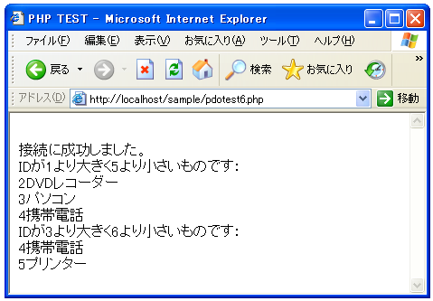

prepareメソッド
prepareメソッドはqueryメソッドと似たような機能を提供しますが、SQL文の基本部分が同じで値だけ異なるような場合(例えば同じテーブルに値だけ変えて何回もデータを挿入するような場合です)に効率よく行える機能を提供してくれます。
PDO::prepare PDOStatement PDO::prepare ( string statement [, array driver_options] )
PDOStatement::execute() メソッドによって実行される SQL ステートメントを
準備します。 SQL ステートメントは、文が実行されるときに実際の値に置き換
えられる 0 個もしくはそれ以上の名前 (:name) もしくは疑問符(?) パラメータ
マークを含むことができます。 名前と疑問符パラメータを同一 SQL ステートメ
ント中で使用することはできません。 どちらか一方か、他のパラメータ形式を
使用してください。
異なるパラメータを用いて複数回実行されるような文に対し PDO::prepare()と
PDOStatement::execute() をコールすることで、ドライバがクライアントまたは
サーバ側にクエリプランやメタ情報を キャッシュさせるよう調整するため、ア
プリケーションのパフォーマンスを最適化します。また、パラメータに手動でク
オートする必要がなくなるので SQL インジェクション攻撃から保護する助けに
なります。
PDO は元々この機能をサポートしていないドライバに対して プリペアドステー
トメントとバインドパラメータをエミュレートします。このため、ある形式をサ
ポートしているがその他の形式をサポートしていないドライバの場合、名前もし
くは疑問符形式のパラメータを他の適当な値に書き換えることも可能です。
引数：
statement 準備、発行する SQL ステートメント。
driver_options この配列は、このメソッドによって返されるPDOStatement
オブジェクトに対して 1 もしくはそれ以上の key=>value の組を含みます。
通常、スクロール可能なカーソルを要求するために PDO::ATTR_CURSOR に
PDO::CURSOR_SCROLL を設定する場合に使用することになるでしょう。
返り値：
もしデータベースサーバが正常に文を準備する場合、 PDO::prepare() は
PDOStatement オブジェクトを返します。 もしデータベースサーバが文
を準備できなかった場合、 PDO::prepare() は FALSE を返します。
引数に指定したSQL文をデータベースに対して発行してくれます。queryメソッドと違う点は、SQL文の一部を変数のように記述しておき、その部分に当てはめる値を後から指定できる点です。
またパラメータを自動的にエスケープ処理をしてくれるため、個別のパラメータについてエスケープ処理を行う必要が無くなります。その為、値が固定で無いSQLを使う場合には、queryメソッドではなくprepareメソッドを使うのが基本となると思います。
例えば下記のようになります。
$sql = 'select id, name from shouhin where id > ? AND id < ?'; $stmt = $dbh->prepare($sql);
上記のSQL文の中で「?」が書かれた部分が2箇所あります。この「?」の部分が後で値を指定する箇所となります。
また「?」ではなく、それぞれ名前を付けたパラメータで指定することも可能です。
$sql = 'select id, name from shouhin where id > :kagen AND id < :jyougen'; $stmt = $dbh->prepare($sql);
SQL文の中で「:param_name」のようにコロンの後に名前を付けたパラメータを使って後で値を指定する箇所を記述する事も出来ます。
prepareメソッド自体はデータベースに送信しようとするSQL文の準備をしているだけです。実際にSQL文をデータベースに送るにはPDOStatementクラスで用意されている「execute」メソッドを使います。そして、この「execute」メソッドを実行する際に、先ほど後で指定するとしておいた箇所に入る実際の値を指定します。
prepareメソッドで用意したSQL文の発行
"execute"メソッドは下記のように定義されています。
PDOStatement::execute bool PDOStatement::execute ( [array input_parameters] )
プリペアドステートメントを実行します。もし、プリペアドステートメントがパ
ラメータマーカを含む場合、次のいずれかを行わなければなりません。
・パラメータマーカに PHP 変数をバインドするため
PDOStatement::bindParam() をコールする。 関連づけされたパラメータマー
カがあれば、バインドされた変数は入力値を渡す もしくは出力値を受け取り
ます。
・入力専用のパラメータ値の配列を渡す
引数：
input-parameters 実行される SQL 文の中のバインドパラメータと同数の要
素からなる、値の配列。
返り値：
成功した場合に TRUE を、失敗した場合に FALSE を返します。
「execute」メソッドを実行するSQL文に引数があった場合(後で値を指定するために「?」や名前付きパラメータを指定した場合)、「execute」メソッドの引数に、値を配列の形で指定します。
例えば「?」を使って2箇所値を指定するようなSQL文を使った場合で考えます。
$sql = 'select id, name from shouhin where id > ? AND id < ?'; $stmt = $dbh->prepare($sql);
最初の部分に数字の「2」を、次の部分に数字の「4」を指定しようとした場合には下記のようになります。
$sql = 'select id, name from shouhin where id > ? AND id < ?'; $stmt = $dbh->prepare($sql); $stmt->execute(array(2, 4));
名前付きパラメータを使った場合は、値の指定の仕方が若干異なります。具体的には下記のようになります。
$sql = 'select id, name from shouhin where id > :kagen AND id < :jyougen';
$stmt = $dbh->prepare($sql);
$stmt->execute(array(':kagen'=>2, ':jyougen'=>4));
「execute」メソッドを実行した結果、PDOStatementクラスのオブジェクトには「query」メソッドの場合と同じくSQL文の実行結果が含まれています(SELECT文のような結果がある場合)。そこから実際の値を取り出す方法は「query」メソッドの場合と同じく「fetch」メソッドを使います。(詳しくは『queryメソッド』を参照して下さい)。
では実際に試してみます。下記では一度条件を指定してSELECT文を実行した後で、条件の部分だけを変えて再度SELECT文を実行しています。
<html>
<head><title>PHP TEST</title></head>
<body>
<?php
$dsn = 'mysql:dbname=uriage;host=localhost';
$user = 'testuser';
$password = 'testuser';
try{
$dbh = new PDO($dsn, $user, $password);
print('<br>');
if ($dbh == null){
print('接続に失敗しました。<br>');
}else{
print('接続に成功しました。<br>');
}
$dbh->query('SET NAMES sjis');
print('IDが1より大きく5より小さいものです：<br>');
$sql = 'select id, name from shouhin where id > ? AND id < ?';
$stmt = $dbh->prepare($sql);
$stmt->execute(array(1, 5));
while($result = $stmt->fetch(PDO::FETCH_ASSOC)){
print($result['id']);
print($result['name'].'<br>');
}
print('IDが3より大きく6より小さいものです：<br>');
$stmt->execute(array(3, 6));
while($result = $stmt->fetch(PDO::FETCH_ASSOC)){
print($result['id']);
print($result['name'].'<br>');
}
}catch (PDOException $e){
print('Error:'.$e->getMessage());
die();
}
$dbh = null;
?>
</body>
</html>
上記ファイルをWWWサーバに設置しブラウザ経由で見ると下記のように表示されます。

( Written by Tatsuo Ikura )

著者 / TATSUO IKURA
初心者～中級者の方を対象としたプログラミング方法や開発環境の構築の解説を行うサイトの運営を行っています。